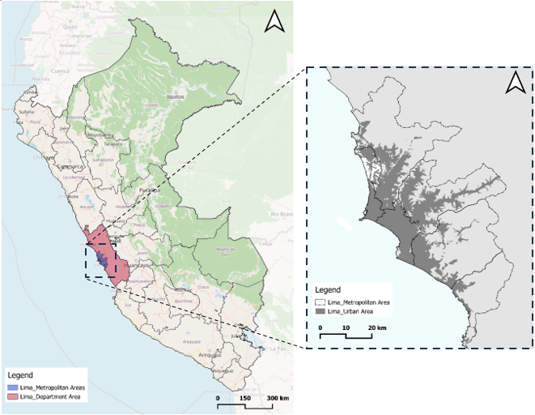
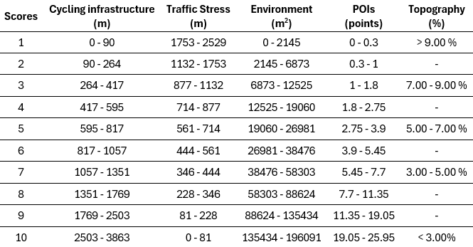
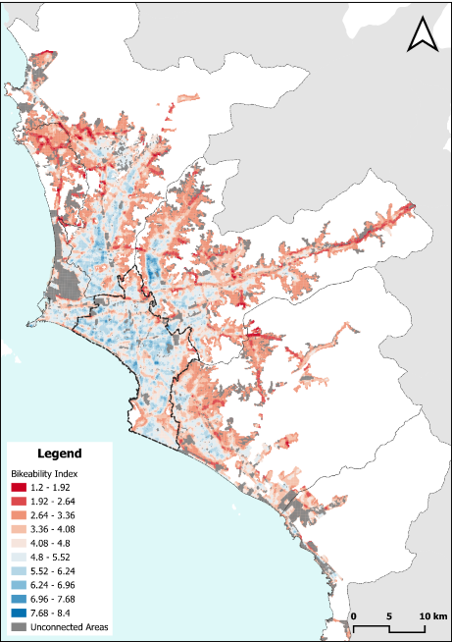

Sustainable Spatial Planning and Analysis
Urban Bikeability Equity in Lima, Peru
Overview
Active travel infrastructure in the Lima Metropolitan Area is characterized by a severe socio-spatial divide. While central districts benefit from connected cycle networks and flat terrain, peripheral areas endure a lack of infrastructure, steep topography, and high traffic stress. This report develops a Bikeability Index to quantify this inequity and evaluate proposed municipal cycling projects.

Methodology
The study employs a grid-based Spatial Multi-Criteria Analysis (SMCA) mapped over 100 x 100 m cells within Lima’s inhabited urban boundary. The index integrates five spatial variables, calculating localized values within a 250 m catchment buffer representing the average acceptable cycling detour.
To create a unified Bikeability Index, the raw data for these five variables was categorized into a discrete 1 to 10 scale (where 10 indicates high bikeability) based on statistical deciles.
Abridged Variable Classification Framework:

Key Findings: The Socio-Spatial Gap
The resulting index reveals that optimal cycling conditions, defined as scores between 6 and 8, are heavily concentrated in the flat, well-connected ‘Centric Lima’ area. Conversely, urban peripheries present highly unfavorable environments for active travel modes due to moderate slopes and arterial road traffic.

By integrating 2021 population data, the severity of this inequity becomes quantifiable.
Approximately 63% of Lima’s residents live in areas with a Bikeability Index score below 4, facing compounding spatial barriers and a lack of connected infrastructure.
Only a minority of the population—around 12%—resides in areas considered accessible for cycling (scores of 6 to 8).
Policy Implications & Limitations
An analysis of the Metropolitan Municipality of Lima’s future cycle infrastructure projects indicates a continued focus on improving connectivity within the already dense central districts. This approach will inadvertently continue to marginalize peripheral areas that possess high destination density (POIs) but lack dedicated infrastructure. The report recommends shifting from a coverage-based metric to an accessibility-based metric that prioritizes these underserved peripheral zones.
Conclusions
Finally, the report acknowledges methodological limitations, most notably the exclusion of a personal safety variable. In the Latin American context, the perceived risk of street crime is a critical determinant in active travel behavior, which may negatively offset the benefits of segregated cycle lanes. Additionally, utilizing park area as an environmental proxy fails to account for the quality of shading and thermal comfort provided by trees.